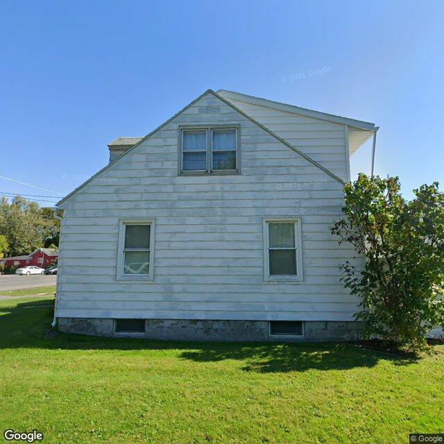

Property entry
255 Seventh North St & Bellshire
Published 2026-10-16T02:03:04+00:00
Parcel key: 003-18-210

City records
Matches use parcel IDs, normalized addresses, or nearby coordinates. Confirm a match against the source record before relying on it. Publication dates are not source-data dates.
Vacant properties 0
No matches stored for this feed. The feed or address matching may be incomplete; this is not confirmation that no records exist.
Rental registry 0
No matches stored for this feed. The feed or address matching may be incomplete; this is not confirmation that no records exist.
Code violations 0
No matches stored for this feed. The feed or address matching may be incomplete; this is not confirmation that no records exist.
Unfit properties 0
No matches stored for this feed. The feed or address matching may be incomplete; this is not confirmation that no records exist.
AI image observations (unverified)
These observations are generated from an image, not an inspection or an official code finding. No human verification is recorded here.
Image capture date: Not recorded. The entry publication date does not establish the age of the image.
Automated image description
The image displays a two-story residential structure with white horizontal siding, an asphalt shingle roof, and a visible foundation, situated on a grassy lot.
Property type guess: single_family
Visible conditions
- The structure features white horizontal siding that exhibits areas of discoloration and possible wear.
- The roof appears to be an asphalt shingle type, showing signs of age and some discoloration.
- Windows are visible on both levels, some appearing older in style.
- The foundation is visible and shows some discoloration and possible surface wear.
- The surrounding yard consists of a maintained grassy area.
- A small shrub is visible near the right side of the structure.
Condition scores
- Porch Or Entry
- not_visible
- Roof
- fair
- Siding Or Facade
- fair
- Trash Debris
- none_visible
- Vegetation Overgrowth
- none_visible
- Windows Doors
- fair
- Yard Or Lot
- good
Visible flags
- Active Construction Visible
- no
- Boarded Windows Or Doors
- no
- Fire Damage Visible
- no
- Structural Damage Visible
- no
- Vacancy Signs Visible
- no
Possible image-only flags
- Siding appears to have discoloration and wear, potentially indicating a need for exterior maintenance or repainting.
- The visible foundation shows discoloration and possible surface wear.
- The roof appears aged, which may suggest future maintenance considerations.
AI review boxes
- Siding discoloration/wear: The white horizontal siding exhibits widespread discoloration and signs of wear, potentially indicating a need for exterior maintenance.
- Foundation discoloration/wear: The visible foundation appears discolored and shows signs of surface wear or possible patching.
Review reasons
- Possible image-only issue
Image quality
- Available
- True
- Bytes
- 74026
- Needs Rerun
- False
ACS tract context
Census Tract 2; Onondaga County; New York
- Housing units
- 1686
- Median gross rent
- 146700
- Median household income
- 51848
- Poverty rate
- 28.1
- Renter-occupied share
- 50.1
- Total population
- 3511
- Vacancy rate
- 14.7
OpenStreetMap nearby
meter search radius
OpenStreetMap lookup failed: HTTP Error 406: Not Acceptable